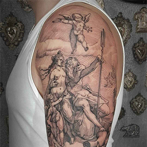
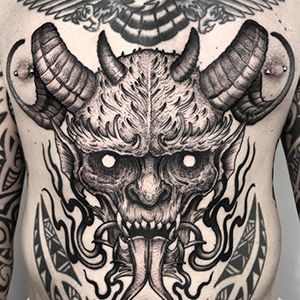
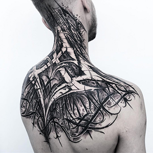
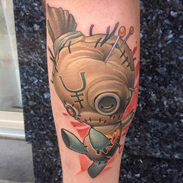
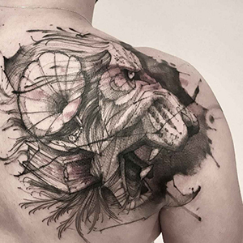
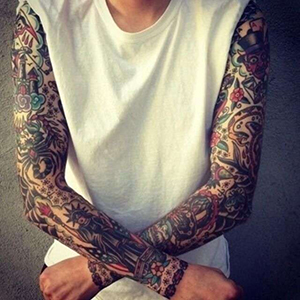
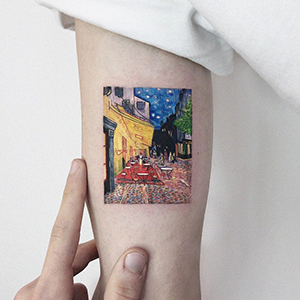

Добро пожаловать в студию «Императрица»!
Мы рады вас приветствовать на нашей странице. Наша студия — это уникальное пространство, где каждая татуировка становится произведением искусства. Мы стремимся создать атмосферу, в которой каждый клиент чувствует себя комфортно и уверенно.
Что такое татуировка?
Татуировка — это рисунок, выполненный на коже с помощью специальной краски. Этот вид искусства может принимать различные формы, размеры и стили, позволяя каждому владельцу выразить свою индивидуальность. Татуировки могут нести глубокий личный смысл, отражая важные моменты жизни, чувства и убеждения.
Существует множество стилей татуировок, от классических традиционных до современных минималистичных и акварельных. Каждый стиль имеет свои особенности и подходит для разных личностей. Татуировки также используются как способ самовыражения — они могут передавать важные сообщения, рассказывать истории и подчеркивать уникальность владельца.
Важно отметить, что создание татуировки — это не просто процесс нанесения рисунка на кожу, но и выбор стиля, цвета и эскиза, который будет олицетворять личные ценности и идеи. При выборе татуировки важно учитывать не только ее внешний вид, но и смысл, который она будет иметь для вас. Каждая татуировка — это часть вашей истории, которую вы решаете запечатлеть на своем теле.
Таким образом, татуировки являются неотъемлемой частью культуры самовыражения и искусства, а также важным элементом в жизни многих людей, подчеркивающим их индивидуальность и стиль.
Почему делают татуировку?
Создание татуировки — это не только модный тренд, но и способ выделиться из толпы. Вот несколько причин, почему стоит рассмотреть возможность татуировки:
- Самовыражение: Каждая татуировка — это уникальная история, отражающая вашу личность, увлечения и убеждения.
- Эстетика: Татуировки могут быть красивыми произведениями искусства, которые украсят ваше тело.
- Символизм: Многие татуировки имеют глубокий смысл и могут служить напоминанием о важных событиях или людях в вашей жизни.
- Уверенность: Наличие татуировки может повысить вашу самооценку и уверенность в себе, подчеркивая вашу уникальность.
Почему выбирают именно нас?
В нашей студии «Императрица» мы обеспечиваем высочайший уровень сервиса и безопасности. Доверив нам создание вашей татуировки, вы можете быть уверены, что получите:
- Профессионализм: Наши мастера — это опытные специалисты, которые знают все тонкости татуировки. Мы используем только качественные материалы и соблюдаем все санитарные нормы.
- Индивидуальный подход: Мы понимаем, что каждая татуировка — это личная история. Мы внимательно выслушиваем пожелания наших клиентов и помогаем реализовать их идеи.
- Разнообразие стилей: В нашей студии доступны различные стили татуировок — от традиционных до современных. Мы можем предложить вам как минималистичные работы, так и сложные композиции.
- Чистота и безопасность: Мы уделяем особое внимание гигиене и стерилизации инструментов, чтобы гарантировать безопасность каждого клиента.
Стили татуировок:
Необычные и неожиданные формы, отражающие внутренний мир художника.

Мягкие, растекающиеся цвета, создающие эффект акварельной живописи.

Стиль, сочетающий элементы механических и биологических форм.

Татуировки в черно-серой гамме, часто с реалистичными изображениями.

Стиль, использующий черную тушь для создания крупных и детализированных узоров.

Создаются из множества мелких точек, образующих узоры и изображения.

Чистые линии и формы, создающие уникальные узоры.

Техника создания мягких теней и плавных переходов.

Татуировки, напоминающие печатные изображения, с детализированными линиями.
Стиль, использующий яркие цвета и четкие линии, часто с элементами поп-арт.
Темные, мистические изображения, часто с использованием сложных шрифтов и символов.

Татуировки, выполненные с использованием только линий, без заполнения цветом.

Искусство оформления букв и слов с уникальным стилем и шрифтом.
Простые и лаконичные дизайны, подчеркивающие суть без лишних деталей.

Современная интерпретация традиционного стиля с яркими цветами и сложными элементами.

Яркие, веселые и эксцентричные татуировки с элементами мультфильмов.
Классический стиль с яркими цветами и узнаваемыми символами, такими как сердца и черепа.

Татуировки, основанные на восточной культуре, часто с изображениями драконов и карпов.

Татуировки, состоящие из сложных узоров и орнаментов.

Подробные и правдоподобные изображения, которые выглядят как фотографии на коже.

Стиль, напоминающий набросок, часто с небрежными линиями и рисунками.
Яркие и насыщенные цвета, часто с элементами флоры и фауны.
Стиль с использованием черных линий и геометрических форм, вдохновленный культурой племен.

Комбинация различных стилей, часто с яркими и эксцентричными элементами.

Татуировки с тонкими линиями и минималистичными деталями.

Яркие татуировки, использующие широкий спектр цветов.
Стиль, который отражает мексиканскую культуру, часто с элементами уличного искусства.

Яркие и детализированные татуировки, часто включающие элементы японской культуры и мифологии.

Мы приглашаем вас ознакомиться с нашим портфолио, где вы можете увидеть работы наших мастеров.
Запишитесь к нам!
Готовы сделать шаг к своей новой татуировке? Запишитесь к мастеру, и мы с удовольствием поможем вам в этом! Ваша уникальность заслуживает того, чтобы быть подчеркнутой именно в студии «Императрица».
Свяжитесь с нами!
Пишите или звоните нам в мессенджер WhatsApp: